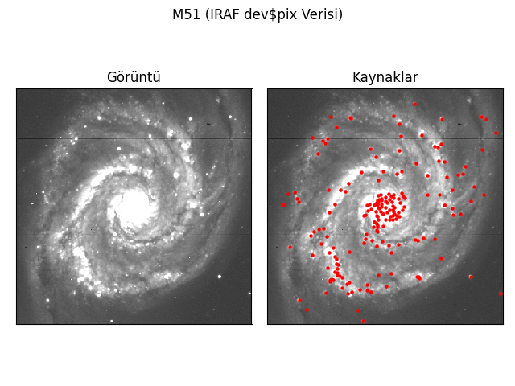

photutils¶
photutils Astropy’ın bağlı paketlerinden olup kaynak tesbiti ve photometry için kullanılır
Kaynak tespiti¶
Source extraction olarak da bilinen kaynak tespiti, sayısal bir görüntü üzerinde verilen parametrelere uygun kaynakların listesini çıkarma işlemidir.
Parametreler, eğiriklik, eliptiklik vb olabilir.
photutils’in DAOStarFinder metodu çıktı olarak görüntü üzerindeki kaynaklar ile ilgili çokça bilgi sunar.
from astropy.io import fits as fts
import numpy as np
from photutils.detection import DAOStarFinder
# # Veriyi okuma
data = fts.getdata(r"[Dosy Yolu]")
# Verinin istatistiki değerleri
average = np.mean(data)
median = np.median(data)
std = np.std(data)
# Daofind Objesi oluşturma
daofind = DAOStarFinder(fwhm=2.0, threshold=std/2)
sources = daofind(data - median)
for col in sources.colnames:
sources[col].info.format = '%.8g'
print(sources.info)
print(sources)
Çıktı:
<Table length=194>
name dtype format
---------- ------- ------
id int32 %.8g
xcentroid float64 %.8g
ycentroid float64 %.8g
sharpness float64 %.8g
roundness1 float64 %.8g
roundness2 float64 %.8g
npix int32 %.8g
sky float64 %.8g
peak float64 %.8g
flux float64 %.8g
mag float64 %.8g
id xcentroid ycentroid sharpness ... sky peak flux mag
--- --------- --------- ---------- ... --- ---- --------- ------------
1 319.04705 31.808405 0.67146743 ... 0 497 6.6075863 -2.0501071
2 274.15089 57.848914 0.63074223 ... 0 179 1.7218201 -0.58996943
3 136.36658 60.760379 0.76806332 ... 0 81 1.4975172 -0.43842954
4 464.54548 61.11959 0.6186316 ... 0 2107 26.501931 -3.5581938
5 179.60694 62.645596 0.55819851 ... 0 246 1.6369339 -0.53507787
6 180.68815 64.117479 0.60273718 ... 0 206 1.2872968 -0.27419672
7 378.1257 65.836786 0.6522953 ... 0 3938 50.556246 -4.259437
8 475.23853 66.465479 0.60086971 ... 0 126 1.4910236 -0.43371129
9 286.20348 75.854891 0.58829051 ... 0 167 1.187624 -0.18669741
10 149.99227 82.326207 0.61004338 ... 0 231 2.5788183 -1.0285519
... ... ... ... ... ... ... ... ...
184 200.05744 435.84366 0.64885926 ... 0 196 1.0767634 -0.08030076
185 216.28365 438.41401 0.58249838 ... 0 484 4.7202186 -1.6849053
186 182.01186 441.40545 0.57127931 ... 0 212 1.1980294 -0.19616869
187 224.30995 441.647 0.62444513 ... 0 121 1.2425457 -0.23578096
188 126.07077 443.73957 0.60246264 ... 0 189 1.5284987 -0.46066268
189 506.64813 444.71712 0.62612885 ... 0 913 12.340806 -2.7283588
190 173.11656 446.14601 0.61189083 ... 0 156 1.0932713 -0.096819832
191 68.571759 459.77075 0.62146054 ... 0 419 4.3917835 -1.6066023
192 84.62802 480.68366 0.95615514 ... 0 214 3.2011865 -1.2632774
193 196.7117 482.58339 0.99380269 ... 0 94 1.559089 -0.48217727
194 206.68325 505.29963 0.62073956 ... 0 486 6.598198 -2.0485634
Length = 194 rows
Process finished with exit code 0
Burada:
id: Tespit edilen kaynak için ayırt edici bir değer. (1’den başlayarak artarak devam eder)
xcentroid: centroid yöntemiyle elde edilen kaynağın merkezinin x koordinatı
ycentroid: centroid yöntemiyle elde edilen kaynağın merkezinin y koordinatı
sharpness: Tespit edilen kaynağın keskinliği
roundness1: simetriye göre kaynak yuvarlaklığı
roundness2: Gauss fite göre kaynak yuvarlaklığı
npix: Gauss çekirdeğinin düştüğü piksel sayısı
sky: Girdi gökyüzü parametresi
peak: Objenin dağıldığı piksellerde en büyük değer
flux: Akı
mag: Parlaklık
Görüntü üzerinde tespit edilen kaynakların listesini görmek için ise matplotlib’den yararlanabiliriz.
from astropy.io import fits as fts
from matplotlib import pyplot as plt
import numpy as np
from photutils.detection import DAOStarFinder
# # Veriyi okuma
data = fts.getdata(r"[Dosy Yolu]")
# Verinin istatistiki değerleri
average = np.mean(data)
median = np.median(data)
std = np.std(data)
# Daofind Objesi oluşturma
daofind = DAOStarFinder(fwhm=2.0, threshold=std/2)
sources = daofind(data - median)
for col in sources.colnames:
sources[col].info.format = '%.8g'
# Anlamlı görüntü oluşturmak için matplotlib işlemleri
fig, (ax1, ax2) = plt.subplots(1, 2)
ax1.imshow(data, interpolation='nearest',
cmap='gray', vmin=average - std, vmax=average + std)
ax2.imshow(data, interpolation='nearest',
cmap='gray', vmin=average - std, vmax=average + std)
for source in sources:
ax2.scatter(source["xcentroid"], source["ycentroid"], s=5, facecolor="red")
plt.suptitle("M51 (IRAF dev$pix Verisi)")
ax1.set_title("Görüntü")
ax1.set_xticks([])
ax1.set_yticks([])
ax2.set_title("Kaynaklar")
ax2.set_xticks([])
ax2.set_yticks([])
plt.tight_layout()
plt.show()
Çıktı

Kaynak tespiti